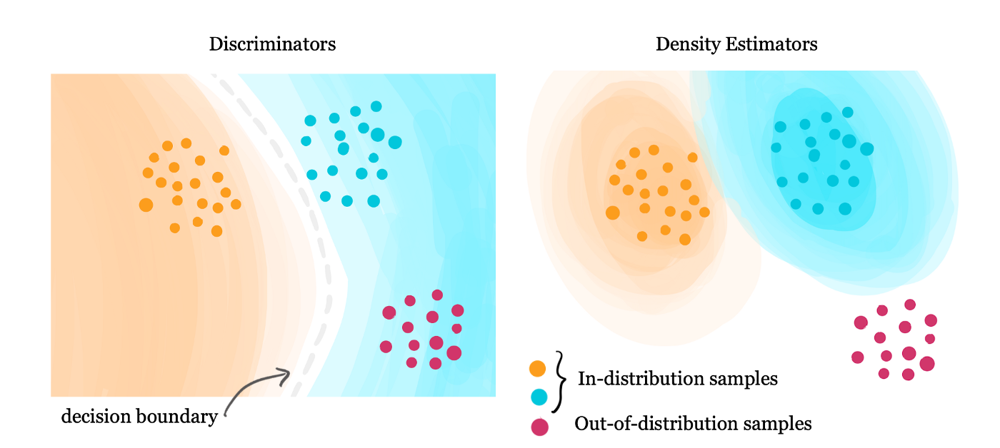
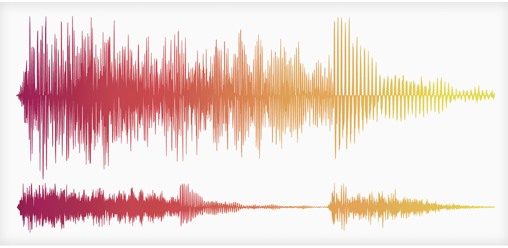
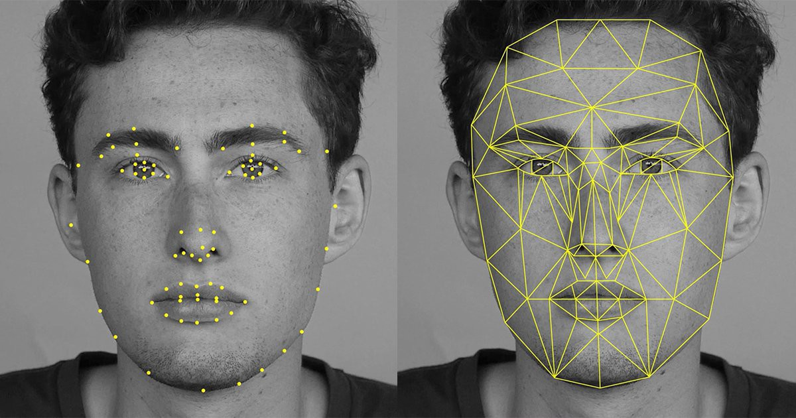
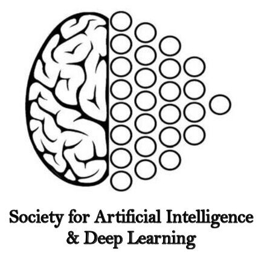
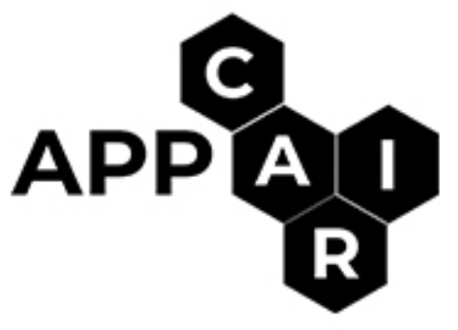

|
|
|
I am a graduate student studying Computer Science at Brown University interested in Artificial Intelligence and Applied Mathematics. I obtained my Undergraduate degree from BITS Pilani, India where I studied Computer Science and Data Science.
|
|
Aug '24 |
Joining Computer Science graduate program at Brown. |
|
May '24 |
Our work "Self-SLAM: A Self Supervised Learning Based Annotation Method to reduce labelling overhead" has been accepted at ECML PKDD 2024. |
|
Aug '23 |
Joined Standard Chartered Bank as a Software Engineer. |
|
Jul '23 |
Graduated with a major in Computer Science and minor in Data Science. |
|
May '23 |
Defended my bachelor's thesis titled "Tackling Drift in Neural Responses in the Spinomotor Pathway". |
|
Jan '23 |
Attending Google Research Week 2023. |
|
Oct '22 |
Our work "DetAIL: A Tool to Automatically Detect and Analyze Drift In Language" has been accepted at AAAI '23 (IAAI conference). |
|
Aug '22 |
I'll be a TA for the course CS F320: Foundations of Data Science at BITS Goa. |
|
Aug '22 |
Joined Serre Lab at Brown University as a Research Intern. |
|
May '21 |
Interning at IBM during the summer. Working in collaboration with IBM Research, to extend Watson OpenScale. |
|
Jan '21 |
Excited to be joining APPCAIR, I will be working on a project in collaboration with TCS Research |
|
Oct '21 |
Abstract of my research work at CNRL- BITS,Goa accepted at Frontiers in Aging Neuroscience. |
|
Aug '21 |
I'll be a TA for the course CS F214: Logic in Computer Science at BITS Goa. |
|
Jul '21 |
I'll be an instructor for this summer's Deep Learning QSTP course. |
|
Jan '21 |
I'll be an instructor for this semester's Introduction to ML and DL, CTE course. |
|
Aug '22 - Present |
Serre Lab |
|
Aug '23 - Aug '24 |
Standard Chartered Global Business Services |
|
May '22 - Aug '22 |
IBM |
|
Jan '22 - May '22 |
APPCAIR & TCS Research. |
|
Aug '21 - Dec '21 |
Cognitive Neuroscience Lab, BITS Goa |
|
May '21 - Jul '21 |
JSW Steel |
|
Fall '22 |
CS F320: Foundations of Data Science - Teaching Assistant [Undergraduate course @ BITS Goa.] |
|
Fall '21 |
CS F214: Logic in CS - Teaching Assistant [Undergraduate course @ BITS Goa.] |
|
Summer '21 |
Quark-QSTP: Introduction to Deep Learning - Instructor. |
|
Spring '21 |
Introduction to Machine Learning and Deep Learning. - Instructor. |

|
Accepted at European Conference on Machine Learning and Principles and Practice of Knowledge Discovery in Databases (ECML PKDD 2024) Supervisors: Snehanshu Saha, Surjya Ghosh [ Paper ]
|

|
Bachelors Thesis Supervisor: Dr. Thomas Serre [ Thesis ]
|

|
Accepted at the Annual Conference on Innovative Applications of Artificial Intelligence, Collocated with AAAI '23. Supervisors: Nishtha Madaan, Harivansh Kumar [ Paper ]
|

|
Supervisors: Dr. Gautam Shroff , Dr. Tirtharaj Dash, Prof. Ashwin Srinivasan
|

|
Superivisor: Dr. Veeky Baths Research Abstract accepted at Frontiers in Aging Neuroscience.
|

|
[ Abstract ]
|
|  |
[ Code ] In this work, we study the problems dealing with OOD data for skin cancer classification. We compare the performance of Virtual Outlier Synthesis, a recent work published at ICLR 2022, with other State-of-the-art OOD detection methods. We further show how using another inference method help achieve better results than VOS. We also study the effects of different types of OOD data on our method. |
|  |
[ Code ] An SVM-based model which can recognize COVID coughs using short audio cough recordings. An attempt at the INTERSPEECH 2021 Computational Paralinguistics Sub-Challenge . |
|  |
[ Code ] A ResNet model which detects important facial key-points in images. Facial key-point detection plays a pivotal role in tasks such as Emotion Analysis. |
|
[ Code ] An LSTM-based model which classifies Reddit posts to their appropriate flairs. Used GloVe for word embedding. |
|

|
 |  |
|
[ Toggle All ]
[ Template ]
|